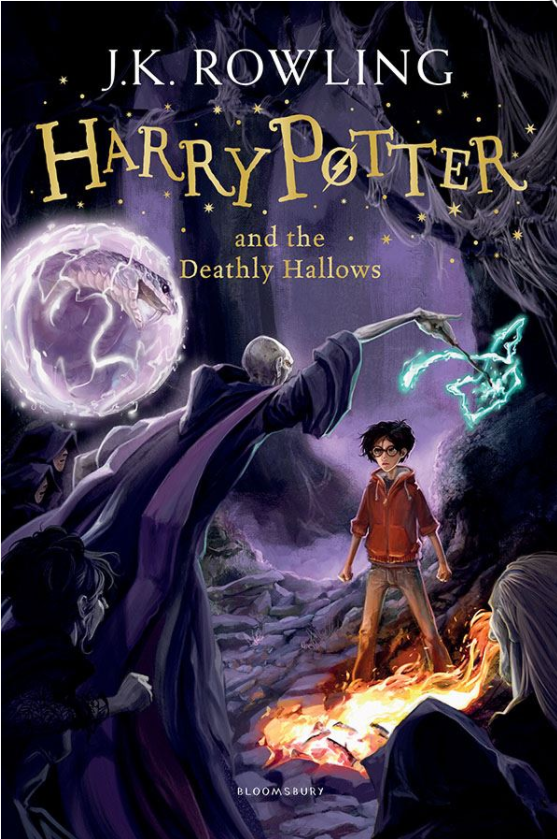
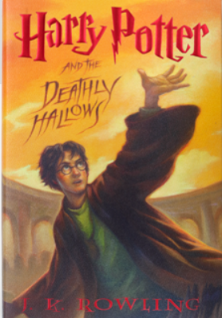

Harry Potter is leaving Privet Drive for the last time. But as he climbs into the sidecar of Hagrid’s motorbike and they take to the skies, he knows Lord Voldemort and the Death Eaters will not be far behind.
The protective charm that has kept him safe until now is broken. But the Dark Lord is breathing fear into everything he loves. And he knows he can’t keep hiding.
To stop Voldemort, Harry knows he must find the remaining Horcruxes and destroy them.
He will have to face his enemy in one final battle.

Harry Potter and the Deathly Hallows

Harry Potter and the Deathly Hallows